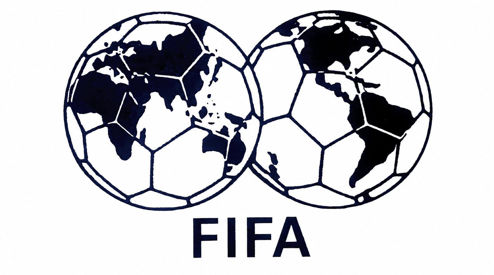
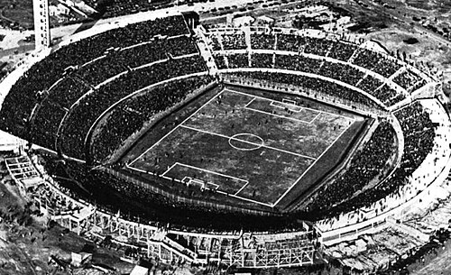
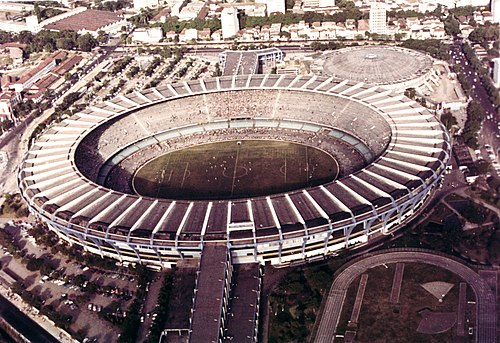
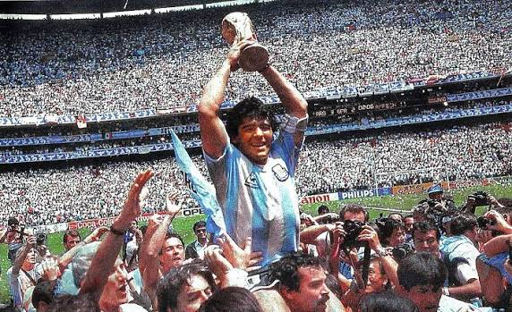
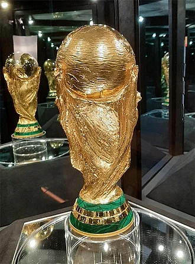
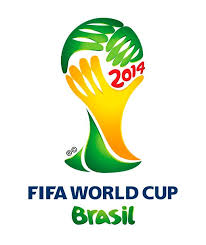
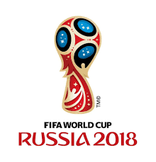
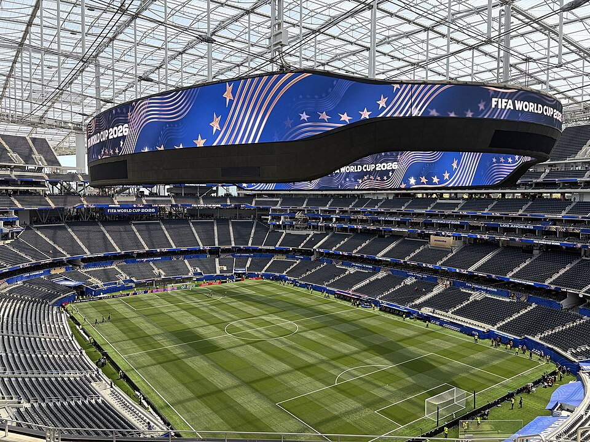

Parte I - La Fundación de la FIFA y los Primeros Pasos (1904–1928)

El 21 de mayo de 1904 se fundó en París la
Federación Internacional de Fútbol Asociación (FIFA)
por representantes de siete países europeos:
- Francia
- Bélgica
- Dinamarca
- Países Bajos
- España
- Suecia
- Suiza
El objetivo de la creación de la FIFA era centralizar la organización
del fútbol, un deporte que crecía rápidamente y que aún no contaba con
una entidad internacional que coordinara las competencias entre países.
Los primeros años
En sus comienzos, la FIFA intentó organizar torneos internacionales
propios, pero las dificultades económicas impidieron que esos proyectos
prosperaran.
Debido a ello, el fútbol internacional quedó bajo la organización de
los Juegos Olímpicos, en las ediciones de
Londres 1908 y Estocolmo 1912,
administradas por la Football Association (FA) de Inglaterra.
La llegada de Jules Rimet
Después de la Primera Guerra Mundial, el dirigente francés
Jules Rimet asumió la presidencia de la FIFA en
1921.
Bajo su liderazgo, la FIFA tomó la histórica decisión de independizarse
del Comité Olímpico Internacional y crear un campeonato propio,
permitiendo además la participación de futbolistas profesionales.
Esta decisión dio origen, años más tarde, a la Copa Mundial de la FIFA.
Parte II - El Nacimiento de la Copa del Mundo y la Era de Oro Inicial (1930–1938)

Uruguay fue elegido como sede del primer Mundial por dos motivos
principales: era el bicampeón olímpico y celebraba
el centenario de la Jura de su Constitución.
Debido a la crisis económica que atravesaba Europa, solamente
13 selecciones participaron en el torneo,
cruzando el océano Atlántico para disputar la competencia.
El 30 de julio de 1930, Uruguay se convirtió en el
primer campeón del mundo tras derrotar
4-2 a Argentina en la final disputada en
Montevideo.
Italia 1934
La segunda Copa del Mundo se celebró en Italia y marcó el traslado
del torneo a Europa.
La competencia estuvo fuertemente influenciada por la propaganda del
régimen de Benito Mussolini, que utilizó el Mundial
como una herramienta política.
Italia aprovechó su condición de local y se consagró campeona del
torneo.
Francia 1938
La tercera Copa del Mundo se disputó en Francia, pocos meses antes
del inicio de la Segunda Guerra Mundial.
Bajo la dirección técnica de Vittorio Pozzo,
la selección italiana logró defender con éxito el título obtenido
cuatro años antes y se convirtió en la primera bicampeona del
Mundial.
Parte III - Pausa Bélica y la Reconstrucción (1942–1954)

La interrupción por la Segunda Guerra Mundial
La Segunda Guerra Mundial obligó a suspender las
Copas del Mundo previstas para 1942 y
1946, ya que el conflicto afectó a gran parte del
mundo e hizo imposible la organización del torneo.
Brasil 1950 - El "Maracanazo"
El Mundial regresó en 1950, con
Brasil como país anfitrión.
Esta edición quedó marcada por el histórico
"Maracanazo", cuando
Uruguay derrotó 2-1 a Brasil en el estadio
Maracaná ante casi 200.000 espectadores,
conquistando así su segundo título mundial.
Suiza 1954 - El "Milagro de Berna"
El Mundial de Suiza 1954 representó un gran avance
para el fútbol gracias a las primeras
transmisiones televisivas del torneo.
La final es recordada por el
"Milagro de Berna", donde la
Alemania Federal, liderada por
Helmut Rahn, venció al legendario
"Equipo de Oro" de Hungría, encabezado por
Ferenc Puskás, logrando una de las mayores
sorpresas en la historia de los Mundiales.
Parte IV - La Era de Pelé, la Globalización y la Televisión (1958–1978)

Suecia 1958
El Mundial de Suecia marcó la aparición de Pelé,
quien con apenas 17 años llevó a Brasil a conquistar
su primer título mundial.
Chile 1962
Brasil consiguió el bicampeonato, a pesar de la
lesión de Pelé durante el torneo, demostrando la fortaleza de su
plantel.
Inglaterra 1966
Inglaterra ganó su primer y único Mundial como
anfitrión. La final estuvo marcada por la polémica del famoso
"gol fantasma" frente a Alemania Federal.
México 1970
Fue el primer Mundial transmitido en color.
Brasil obtuvo su tercer campeonato con un equipo considerado uno de
los mejores de la historia, liderado por Pelé.
Tras este torneo, el trofeo original
Jules Rimet fue reemplazado por la actual
Copa Mundial de la FIFA.
Alemania Federal 1974
Surgió el famoso "Fútbol Total" de los Países Bajos,
conocido como la "Naranja Mecánica", liderada por
Johan Cruyff.
Sin embargo, Alemania Federal derrotó a los neerlandeses en la final
y se consagró campeona del mundo.
Argentina 1978
Argentina organizó el Mundial y consiguió su
primer título mundial, coronándose como local.
Parte V - Maradona

España 1982
El Mundial de España 1982 marcó una nueva etapa en la historia de la
competencia, ya que el número de selecciones participantes aumentó
oficialmente de 16 a 24 equipos.
México 1986
México fue el escenario de la consagración de
Diego Armando Maradona, quien llevó a Argentina a
conquistar su segundo título mundial.
Durante los cuartos de final frente a Inglaterra anotó dos de los
goles más famosos de la historia del fútbol:
el "Gol del Siglo" y
la "Mano de Dios".
Italia 1990
Fue un Mundial caracterizado por su estilo de juego defensivo y un
bajo promedio de goles. Alemania consiguió el campeonato tras vencer
a Argentina en la final.
Estados Unidos 1994
Este torneo rompió récords históricos de asistencia de público y fue
el primero en definirse mediante una
tanda de penales.
Brasil derrotó a Italia y obtuvo su cuarto campeonato mundial.
Francia 1998
La Copa del Mundo volvió a expandirse y pasó a disputarse con
32 selecciones.
Francia conquistó su primer título mundial gracias al liderazgo de
Zinedine Zidane, quien fue la gran figura de la
final disputada en Saint-Denis.
Parte VI: El Siglo XXI y las Nuevas Fronteras (2002–2022)

Durante el siglo XXI, la FIFA impulsó una política de rotación continental
para llevar la Copa Mundial a nuevas regiones y expandir el fútbol a nivel
global.

Corea del Sur / Japón 2002
🏆 Campeón: Brasil
Fue el primer Mundial organizado por dos países y el primero
disputado en Asia. Brasil conquistó su quinto título mundial.

Alemania 2006
🏆 Campeón: Italia
El torneo tuvo una enorme audiencia mundial y quedó marcado por
la despedida de Zinedine Zidane tras la final.

Sudáfrica 2010
🏆 Campeón: España
Fue el primer Mundial disputado en África. España conquistó su
primer título con el famoso estilo de juego conocido como
"Tiki-Taka".

Brasil 2014
🏆 Campeón: Alemania
El torneo es recordado por el histórico
7-1 que Alemania le propinó a Brasil en las
semifinales.

Rusia 2018
🏆 Campeón: Francia
Se implementó oficialmente el
VAR (Video Assistant Referee), una de las
mayores innovaciones tecnológicas del torneo.

Qatar 2022
🏆 Campeón: Argentina
Fue el primer Mundial disputado en un país árabe y celebrado
entre noviembre y diciembre. Lionel Messi levantó la Copa del
Mundo tras una final histórica frente a Francia.
Parte VII - Mundial 2026

La Copa Mundial de la FIFA 2026™ representa una nueva etapa en la historia del
fútbol. Es la vigésima tercera edición del torneo y, por primera vez, es organizada de
manera conjunta por Canadá, Estados Unidos y México, convirtiéndose en la primera
Copa del Mundo disputada en tres países. Además, marca el regreso del Mundial a
Norteamérica desde Estados Unidos 1994 y a México por tercera ocasión, un récord
histórico para un país anfitrión.
Innovaciones del Mundial 2026
-
Expansión a 48 selecciones:
El torneo aumenta de 32 a 48 equipos participantes, ofreciendo más oportunidades
para que nuevas selecciones hagan su debut en una Copa del Mundo.
-
Nuevo formato de competencia:
Las selecciones se distribuyen en 12 grupos de cuatro equipos. Clasifican
los dos primeros de cada grupo y los ocho mejores terceros, dando paso a una nueva
ronda de dieciseisavos de final.
-
Más partidos que nunca:
El campeonato contará con 104 encuentros, convirtiéndose en el Mundial
más largo y con mayor cantidad de partidos en la historia.
-
16 ciudades sede:
Los partidos se disputan en modernos estadios repartidos entre Canadá,
Estados Unidos y México, mostrando la infraestructura deportiva más grande
utilizada en una Copa Mundial.
-
Tecnología avanzada:
Continúan utilizándose el VAR y la tecnología de detección automática del fuera
de juego para mejorar la precisión de las decisiones arbitrales.
Estado de la Competición (Junio de 2026)
El torneo se encuentra en plena disputa de la fase de grupos, donde las selecciones
luchan por avanzar a las rondas eliminatorias. Hasta el momento, equipos como
México, Estados Unidos, Alemania,
Argentina, Francia y Noruega
ya aseguraron matemáticamente su clasificación a los dieciseisavos de final.
Argentina logró el primer puesto de su grupo gracias a una destacada actuación de
Lionel Messi, quien marcó un doblete frente a Austria.
🏆 La Gran Final
La competencia culminará el 19 de julio de 2026 en el
MetLife Stadium, ubicado en Nueva Jersey (Estados Unidos).
Allí se coronará al nuevo campeón del mundo, en una edición que promete ser la
más grande, moderna e internacional de toda la historia de la Copa Mundial de la FIFA.